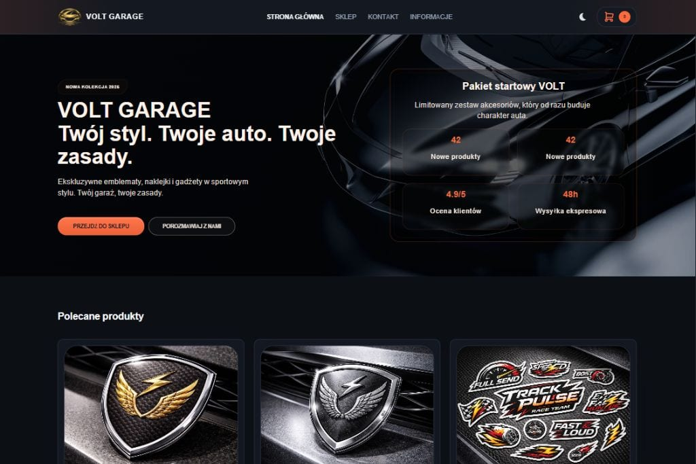

01
Volt Garage
Projekt sklepu e-commerce z częściami i akcesoriami samochodowymi, zaprojektowany pod mocny branding, czytelną ofertę i wygodną ścieżkę zakupową.
Przegląd projektu
Volt Garage rozwija kierunek nowoczesnego sklepu internetowego dla branży motoryzacyjnej, który łączy energiczny charakter marki z uporządkowaną strukturą sprzedażową.
Projekt pokazuje, jak połączyć wizerunek sklepu z czytelną ekspozycją kategorii, produktów i kluczowych informacji wspierających decyzję zakupową.
W e-commerce znaczenie ma zarówno klimat marki, jak i logika interfejsu. Volt Garage zachowuje wyrazisty ton wizualny, ale nie rezygnuje z klarownego układu sekcji, dzięki czemu sklep pozostaje łatwy do skanowania i rozwijania.
Projekt może stanowić bazę dla dalszej rozbudowy o filtry, wyróżnione kolekcje, akcje promocyjne, sekcje inspiracyjne czy rozbudowane karty produktów.
E-commerceMotoryzacjaSklep onlineProdukty
Zakres i akcenty
Projekt został podporządkowany temu, by sklep wyglądał wyraziście, ale pozostawał czytelny i sprzedażowo uporządkowany.
02
Czytelna prezentacja oferty
03
Skalowalność e-commerce
Technologie i standard
Strona korzysta z lekkiego frontendu i struktury, która wspiera estetykę, wydajność i łatwiejszy rozwój sprzedażowych sekcji.
Takie projekty potrzebują dobrej kontroli nad layoutem, hierarchią i wizualnym ciężarem interfejsu. Statyczna warstwa frontendowa dobrze wspiera konceptowe sklepy i warstwy sprzedażowe rozwijane krok po kroku.
- semantyczna struktura treści i sekcji ofertowych,
- responsywny układ dopasowany do mobile commerce,
- komponenty gotowe do dalszego rozwijania katalogu i kampanii.
Prezentacja wizualna
Główny kadr projektu pokazuje kierunek dla nowoczesnego sklepu motoryzacyjnego z wyraźnym charakterem marki.

Dalszy krok
Przejdź do wersji live sklepu albo wróć do pełnego portfolio.
System detail pages porządkuje projekty i przygotowuje portfolio na łatwe dodawanie kolejnych case studies.